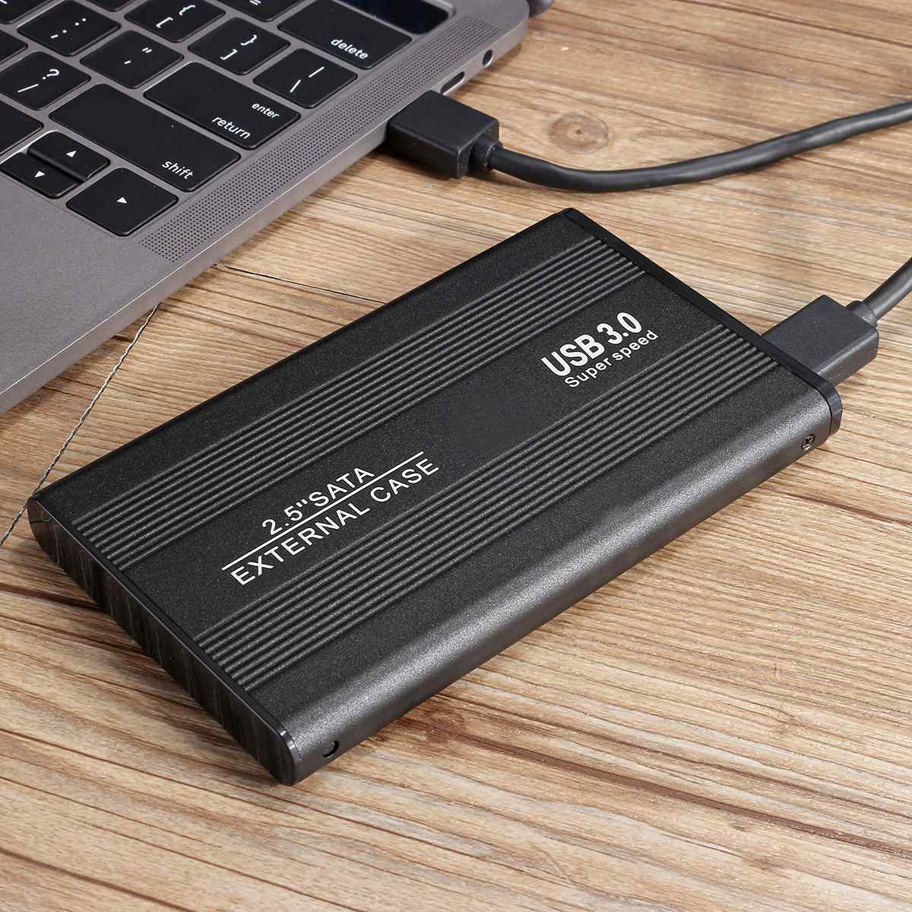
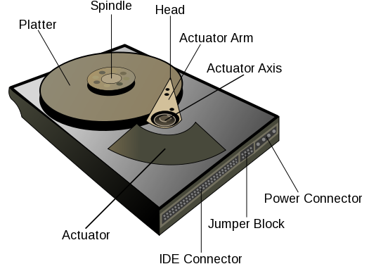

Explore Computer System Architecture
Backing storage and its types
What is backing storage?
Backing storage is the non-volatile, permanent storage that keeps data and programmes in a computer system running even when the power is switched off. It is sometimes referred to as secondary storage or auxiliary storage. Backing storage stores data for an extended period of time, in contrast to primary storage, which is volatile and loses its contents when the power is turned off, such as RAM (Random Access Memory).The main function of backing storage is to give users a way to store user files, operating system, and application data in addition to massive volumes of data. The reliability and integrity of data over time depend heavily on this kind of storage.
Backing storage is essential to computer systems because it offers a dependable, long-term data storage option, guaranteeing that data is kept safe even when the computer is turned off or restarted. It is a crucial part of keeping the user data, apps, and operating system stored in a persistent and easily retrievable manner.
Read more
Types of Backing Storage
There are several types of backing storage, each with its own characteristics and use cases. Here are some common types of backing storage:
- Hard Disk Drives (HDD): HDDs are traditional magnetic storage devices that use rapidly spinning disks to read and write data. They are commonly found in desktop and laptop computers and are known for offering relatively large storage capacities at a lower cost per gigabyte compared to some other technologies.
- Solid-State Drives (SSD): SSDs use flash memory (non-volatile memory chips) to store data. Unlike HDDs, SSDs have no moving parts, resulting in faster data access times, lower power consumption, and increased durability. SSDs are commonly used in laptops and desktops for improved performance.
- USB Flash Drives (Pen Drives): These are small, portable storage devices that use flash memory. USB flash drives are often used for data transfer between computers due to their compact size and convenience. They are also used for portable storage and backup.
- Optical Media: Optical storage includes devices like CDs (Compact Discs), DVDs (Digital Versatile Discs), and Blu-ray discs. These use lasers to read and write data on a reflective surface. Optical media is commonly used for distributing software, music, videos, and archival purposes.
- Memory Cards: Memory cards, such as SD cards, are small, removable storage devices commonly used in cameras, smartphones, and other portable devices. They use flash memory and are known for their compact size and portability.
- Tape Drives: While less common in personal computing, tape drives use magnetic tape to store data sequentially. They are often used for backup and archival purposes due to their relatively high capacity.
- Network-Attached Storage (NAS): NAS devices are specialized servers dedicated to storing and sharing files over a network. They are equipped with multiple hard drives and provide centralized storage for multiple users and devices.
- Cloud Storage: Cloud storage involves storing data on remote servers accessed over the internet. Services like Google Drive, Dropbox, and Microsoft OneDrive provide users with virtual storage space, offering flexibility and accessibility from various devices.
These types of backing storage devices serve different purposes, and the choice between them depends on factors such as performance requirements, storage capacity needs, portability, and cost considerations. Advances in technology continue to bring new storage solutions and improvements to existing ones.
Portable and Fixed Drives

Portable Drives:
Definition: Portable drives are external storage devices that are designed to be easily carried and connected to different computers or devices. They are not permanently attached to a specific computer.
Characteristics:
- Compact and lightweight, making them easy to transport.
- Typically connected to a computer via USB, Thunderbolt, or other standard interfaces.
- Often powered through the connection to the computer, eliminating the need for an external power source.
- Common examples include portable external hard drives, USB flash drives, and portable SSDs.
Use Cases:
- Data transfer between computers.
- Portable storage and backup.
- Accessing data on different devices without internal storage modifications.

Fixed Drives:
Definition: Fixed drives, also known as internal drives, are storage devices that are integrated into the computer's chassis and are not designed to be easily removed or carried between different systems.
Characteristics:
- Installed inside the computer, connected directly to the motherboard.
- Typically larger in storage capacity compared to portable drives.
- Provide primary storage for the operating system, applications, and user data.
- May include both hard disk drives (HDDs) and solid-state drives (SSDs).
- Often require additional power connections.
Use Cases:
- Primary storage for the operating system and installed software.
- Storage of large amounts of data on a single system.
- Generally, not intended for frequent movement between different computers.
Key Differences:
- Mobility: Portable drives are designed for mobility and can be easily carried, while fixed drives are permanently installed within a computer.
- Connection: Portable drives are typically connected externally to a computer via USB or other interfaces, whereas fixed drives are connected internally to the motherboard.
- Power: Portable drives often draw power from the connected computer, while fixed drives may require additional power connections.
- Use Cases: Portable drives are suitable for on-the-go storage and data transfer, while fixed drives serve as primary storage within a single computer.
Read more
Performance Factors of Portable and Fixed Drives
Data Transfer Rate:
Portable Drives:
Portable drives, such as external hard drives or USB flash drives, have data transfer rates that depend on the type of interface used (e.g., USB 2.0, USB 3.0, USB-C, Thunderbolt).
USB 3.0 and USB-C interfaces generally offer faster data transfer rates compared to USB 2.0. The specific transfer rate can vary but is typically measured in megabytes per second (MB/s) or gigabytes per second (GB/s).
Higher data transfer rates result in faster copying or transferring of files between the portable drive and the connected device.
Read more
Fixed Drives:
Internal drives, like those found in desktops or laptops, also have data transfer rates influenced by the connection interface (e.g., SATA, NVMe for SSDs).
SATA III is a common interface for HDDs and SSDs in laptops and desktops. NVMe (Non-Volatile Memory Express) is a faster interface, typically used for high-performance SSDs.
The data transfer rate for internal drives is crucial for tasks such as loading operating systems, launching applications, and accessing large files.
Read more
Capacity:
Portable Drives:
Portable drives come in various capacities, ranging from a few gigabytes (GB) to multiple terabytes (TB). The capacity determines how much data the drive can store.
Portable drives are suitable for on-the-go storage, backups, and transferring large files between devices. Users choose capacities based on their specific needs, such as storing documents, photos, videos, or even entire system backups.
Fixed Drives:
Fixed drives, whether HDDs or SSDs, are available in larger capacities compared to most portable drives. Capacities can extend to multiple terabytes for HDDs and high-capacity SSDs.
Internal drives serve as the primary storage for operating systems, applications, and user data. Larger capacities are essential for users with extensive data storage requirements, such as multimedia content creators, gamers, or professionals dealing with large datasets.
Considerations:
- Performance Balance: Higher data transfer rates and larger capacities are generally desirable, but the choice depends on the specific use case. For example, a portable drive with a high data transfer rate might be preferred for quick file transfers, while a fixed drive with large capacity might be more suitable for long-term storage needs.
- Cost: Higher-performance drives and larger capacities often come at a higher cost. Users need to balance their performance requirements with budget considerations.